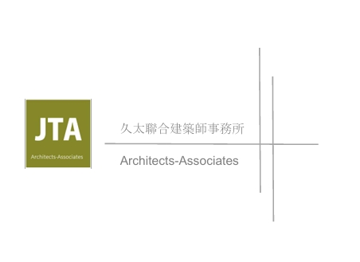

首頁 ／ 久太聯合建築師事務所
TEAM / JTA ARCHITECTS
久太聯合建築師事務所
主持建築師 周泰良｜住宅・都市更新・旅館・廠辦
JTA / ARCHITECTS-ASSOCIATES
久太聯合建築師事務所
從建築規劃到生活細節，讓設計回應基地與使用者的需求。
由周泰良主持建築師的建照、施工管理及建築設計經驗出發，久太的作品涵蓋集合住宅、都市更新、旅館與廠辦。透過不同尺度與使用需求的規劃，呈現團隊對建築外觀、入口空間與整體環境的思考。
在元捷的合作案件中，久太參與多件都市更新與危老重建案的建築設計，從基地條件與住宅需求出發，規劃建築量體、空間配置及使用機能。
認識周泰良主持建築師
RESIDENTIAL / AWARDS
集合住宅・得獎作品
沅祥・泰晤士、亞昕首藏、耕薪・永吉路住宅。作品資料分別列有2013年度金質獎、2010年度金質獎及2010年度金石獎。
久太聯合建築師事務所作品資料｜點擊圖片可放大閱覽
URBAN RENEWAL / HOSPITALITY
都市更新與旅館作品
台大汀州路旅館案、耕薪雙城街都市更新、瑞安街都市更新、士林三玉段都市更新。
久太聯合建築師事務所作品資料｜點擊圖片可放大閱覽
RESIDENTIAL / BADE ROAD
八德路集合住宅・建築外觀
以建築立面、量體比例與多角度透視，呈現集合住宅的設計構想。
久太聯合建築師事務所作品資料｜點擊圖片可放大閱覽
RESIDENTIAL / SPACE & DETAIL
八德路集合住宅・入口細節
從入口、門廳到街道尺度，觀察建築與日常生活銜接的空間細節。
久太聯合建築師事務所作品資料｜點擊圖片可放大閱覽
WORKPLACE / NEIHU
新生五金・內湖廠辦
位於內湖瑞湖街的廠辦作品，展示建築外觀實景與基地周邊環境。
久太聯合建築師事務所作品資料｜點擊圖片可放大閱覽
本頁展示久太聯合建築師事務所作品；非全部為元捷建設開發案件。作品名稱及得獎資訊依提供資料呈現，圖中建築透視圖為設計示意。
← 返回菁英團隊